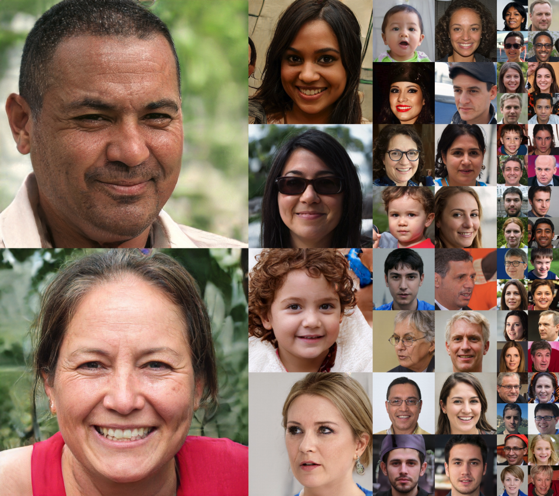
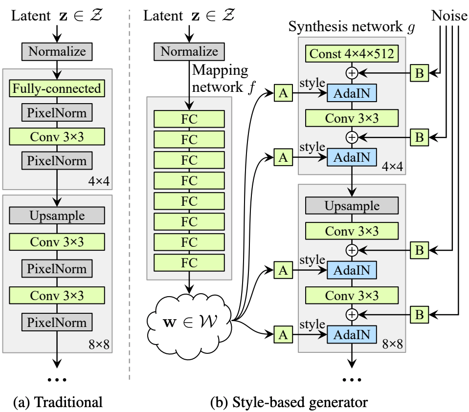
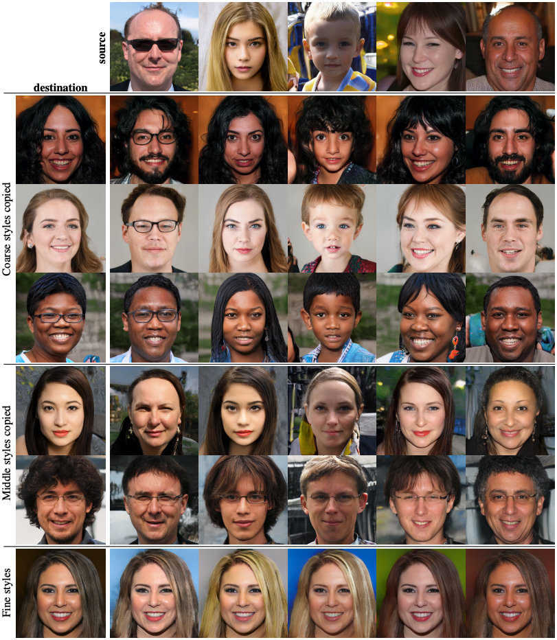
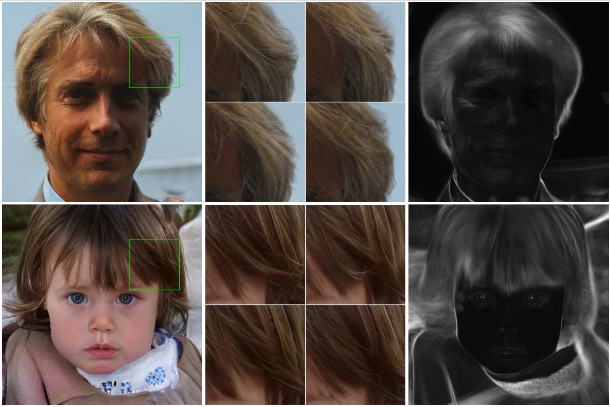
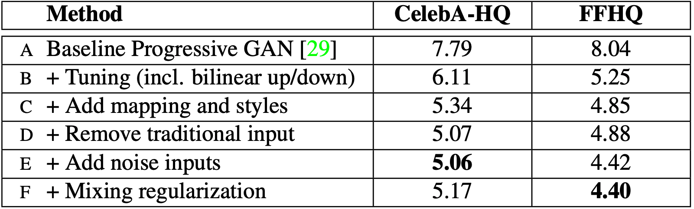

Faces generated by NVIDIA's StyleGAN framework, trained on 8 Tesla V100 GPUs for 6 days 14 hours.
Generating very realistic fake images
The main aspects of NVIDIA's new StyleGAN architecture (Karras, Laine, & Aila, 2018) allowing it to generate such realistic faces are:
- NVIDIA's new dataset, FFHQ, is comprised of 70,000 high quality 1024x1024 images of a diverse set of faces collected from Flickr and refined with Mechanical Turk. Their previous dataset, CelebA-HQ, which was built off of The Univ. of Hong Kong's CelebA dataset, only contained 30,000 images of celebrities, and was artificially augmented using a convolutional residual autoencoder (similar to RED-Net) and an SRGAN.
- An 8-layer multilayer perceptron mapping the input vector to a different latent space, from which "styles" are sampled for each convolutional layer in the synthesis network of the generator. They claim that this latent space features better disentanglement and is perceptually more linear than the input space.
- Layer-wise injection of input data and noise.
- Like they did in their previous breakthrough in generating realistic faces with GANs, the synthesis component of the generator and the discriminator were gradually grown during training to progressively output/assess images of higher resolution, which speeds up and greatly stabilizes training.
Embedding the input latent code
The generator of NVIDIA's StyleGAN is split into two networks, the mapping network and the synthesis network. Unlike traditional GANs, StyleGAN embeds the input code into an intermediate latent space which is done by the mapping network. The new resulting code is then injected into each convolutional layer of the synthesis network of the generator.

- The mapping network is an 8-layer multilayer perceptron with an output dimensionality of 512.
- The input code, which lies in latent space z, is mapped to latent space w.
- Since the training process enforces the sampling probability of the possible codes from z to match the corresponding density found in the training set, the paper argues that some degree of entanglement between the factors of z is unavoidable.
- However, since the latent space w is not restricted in the same way, it is allowed and even encouraged to be disentangled. The paper claims that this is because it should be easier for the network to decode disentangled representations than entangled ones.
- Therefore, StyleGAN in theory generates a less entangled latent space w, even when the factors of variation are not known in advance.
- The output of the mapping network is injected into the output of each of the synthesis network's convolutional layers, after being processed by a learned affine transform (i.e. a single fully connected layer) specific to each convolutional layer.
- As per NVIDIA's original paper on progressive GANs, they again reject the notion of that GANs suffer from covariate shift. Instead of using batch normalizaton, they use adaptive instance normalization (AdaIn) (Huang & Belongie, 2017), a faster and more efficient normalization technique. They use the aforementioned affine transformation to generate the scale and bias for the AdaIn operation.
Layer-wise style inputs

Mixing regularization: Visualization of different scales of style mixing. The latent codes for the generated images on the left are partially overwritten by the latent codes for the generated images on the top to generate the other images.
- Since the code from the latent space w is inputted into each convolutional layer of the synthesis network, scale-specific modifications to the generated images can be made. Each of these inputs are referred to as "styles" since similar network architectures have already been used for style transfer, image-to-image translation, and domain mixture.
- As each of the convolutional layers of the synthesis network is followed by a 2x upscaling layer, each style affects the resulting image at a different scale.
- The AdaIn operation also serves to normalize feature maps and overwrite preceding style inputs.
- To further localize the effects of the input styles, a portion of the input latent codes during training undergo mixing regularization, in which two latent z vectors are used to generate an image to attempt to fool the discriminator. This is done by using the two z vectors to generate two w vectors (w1, w2)and then generating a certain portion of the input styles using w1 and the rest using w2. The crossover point where the source w vector for the input styles switches from w1 to w2 is randomly selected.
- The localized effects of each style is illustrated in the above figure the demonstrates the results from mixture regularization.
Layer-wise stochastic inputs

Input noise govern acceptably stochastic aspects of the generated photos, such as specific placement of hair strands, pores, and reflections in the eyes. Images to the far right represent the standard deviation of each pixel over 100 different realizations of input noise at each layer, highlighting which aspects are affected by the noise.
- Many aspects of human faces can be acceptably stochastic, such as the exact placement of hair/pores/freckles.
- Since a traditional GAN only accepts input through its initial input layer, it must learn to generate pseudo-random numbers from earlier activations whenever needed in order to produce these features. This takes up part of the network's capacity to learn, and hiding the periodicity of the generated numbers is difficult, as shown by many repetitive patterns that are exhibited by traditional GANs.
- By inputting noise directly into each layer, StyleGAN is relieved of this duty, and learns to use the noise to only adjust aspects of the image that can be slightly randomized, and does not exhibit the periodicity that a traditional GAN would.
- Since a fresh set of noise is provided to each layer, the effects of each input noise is also tightly localized to its own layer, meaning that adjusting noise at a finer layer only affects finer details (ex. placement of skin pores) while coarser layers affect only coarse features (ex. large-scale hair curling and larger background features).
Evaluation of new mechanisms

FID (lower is better) between real and generated images resulting from applying various techniques introduced by the paper
- The Fréchet Inception Distance is a metric obtained by using an InceptionV3 image classifier trained on ImageNet. The distributions between the activations generated by the InceptionV3 network on each set of images (generated and real) are then compared using the Fréchet Distance.
References
- Karras, T., Laine, S., and Aila, T. (2018). A Style-Based Generator Architecture for Generative Adversarial Networks. arXiv preprint arXiv:1812.04948.
- Lee, S., Ha, J., and Kim, G. (2019). Harmonizing Maximum LIkelihood with GANs for Multimodal Conditional Generation. arXiv preprint arXiv:1902.09225.
- Lehtinen, J., Munkberg, J., Hasselgren, J., Laine, S., Karras, T., Aittala, M., and Aila, T. (2018). Noise2Noise: Learning Image Restoration without Clean Data. arXiv preprint arXiv:1803.04189.
- Huang, X., and Belongie, S. (2017). Arbitrary style transfer in real-time with adaptive instance normalization. arXiv preprint arXiv:1703.06868.